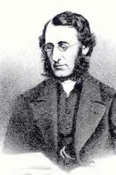

|
|
颂主新歌 |
|
1 Still with Thee, O my God, 2 With Thee when dawn comes in 3 With Thee amid the crowd 4 With Thee when darkness brings 5 With Thee, in Thee, by faith Amen. |
|
|
https://www.mred365.cn/szxg/7365.html
https://hymnary.org/hymn/HLMC1969/page/382 Still with Thee, O My God
|
|
|
|
|


362随时与主同在
| Text: | Still with Thee, O My God |
| Author: | James D. Burns, 1823-1864 |
| Tune: | POTSDAM |
| Short Name: | James Drummond Burns |
| Full Name: | Burns, James Drummond, 1823-1864 |
| Birth Year: | 1823 |
| Death Year: | 1864 |
Burns, James Drummond,

M.A., was born at Edinburgh, February 18, 1823. He studied and graduated M.A. at the University of Edinburgh. In 1845 he became Free Church minister of Dunblane, but resigned through failing health, in 1848, and took charge of the Presbyterian Church at Funchal, Madeira. In 1855 he became minister of Hampstead Presbyterian Church, London. Died at Mentone, Nov. 27, 1864, and was buried in Highgate Cemetery, London.
His hymns appeared in:—
(l) The Vision of Prophecy: and other Poems (Edin.,
Edmonston and Douglas). This was originally published in 1854, and enlarged
in 1858. The Poems are distinguished by vivid colouring and poetic
imagination, along with directness, delicacy of execution, pensive
sweetness, and tenderness. They have never however become widely popular.
Included are 29 "Hymns and Meditations," many of which rank among the very
best of our modern hymns for beauty, simplicity of diction, and depth of
religious feeling. (2) The Evening Hymn (Lond.,
T. Nelson & Sons), 1857. This consists of an original hymn and an original
prayer for every evening in the month— 31 in all. The Hymns and Prayers
alike are characterised by reverence, beauty, simplicity, and pathos. Some
of the hymns in this volume are now well known; e.g. "Still with Thee, 0 my
God," "Hushed was the evening hymn," "As helpless as a child who clings."
(3) Memoir and Remains of the late Rev. James D. Burns,
M.A., of Hampstead. By the late Rev. James Hamilton, D.D. (London,
J. Nisbet & Co.), 1869. Besides 13 Sermons and the Memoir,
this work includes 40 “Hymns and Miscellaneous Pieces." A number of these
had appeared in periodicals. Some of them are very good though not equal to
those previously published. Also 39 translations of German hymns, which
appeared in the Family Treasury, &c., are rendered
exactly in the metres of the originals and many had not previously been
translated. The translations are generally very good. (4) Burns also wrote
the article Hymn in the 8th edition of
the Encyclopedia Britannica. [Rev. James Mearns, M.A.]
-- John Julian, Dictionary of Hymnology (1907)
Tune Information
| Title: | POTSDAM |
| Composer: | Johann Sebastian Bach |
| Meter: | 6.6.8.6 |
| Incipit: | 12432 15617 65346 |
| Key: | E♭ Major |
| Copyright: | Public Domain |
| Short Name: | Johann Sebastian Bach |
| Full Name: | Bach, Johann Sebastian, 1685-1750 |
| Birth Year: | 1685 |
| Death Year: | 1750 |
Johann Sebastian Bach

was born at Eisenach into a musical family and in a town steeped in Reformation history, he received early musical training from his father and older brother, and elementary education in the classical school Luther had earlier attended.
Throughout his life he made extraordinary efforts to learn from other musicians. At 15 he walked to Lüneburg to work as a chorister and study at the convent school of St. Michael. From there he walked 30 miles to Hamburg to hear Johann Reinken, and 60 miles to Celle to become familiar with French composition and performance traditions. Once he obtained a month's leave from his job to hear Buxtehude, but stayed nearly four months. He arranged compositions from Vivaldi and other Italian masters. His own compositions spanned almost every musical form then known (Opera was the notable exception).
In his own time, Bach was highly regarded as organist and teacher, his compositions being circulated as models of contrapuntal technique. Four of his children achieved careers as composers; Haydn, Mozart, Beethoven, Mendelssohn, Schumann, Brahms, and Chopin are only a few of the best known of the musicians that confessed a major debt to Bach's work in their own musical development. Mendelssohn began re-introducing Bach's music into the concert repertoire, where it has come to attract admiration and even veneration for its own sake.
After 20 years of successful work in several posts, Bach became cantor of the Thomas-schule in Leipzig, and remained there for the remaining 27 years of his life, concentrating on church music for the Lutheran service: over 200 cantatas, four passion settings, a Mass, and hundreds of chorale settings, harmonizations, preludes, and arrangements. He edited the tunes for Schemelli's Musicalisches Gesangbuch, contributing 16 original tunes. His choral harmonizations remain a staple for studies of composition and harmony. Additional melodies from his works have been adapted as hymn tunes.
--John Julian, Dictionary of Hymnology (1907)